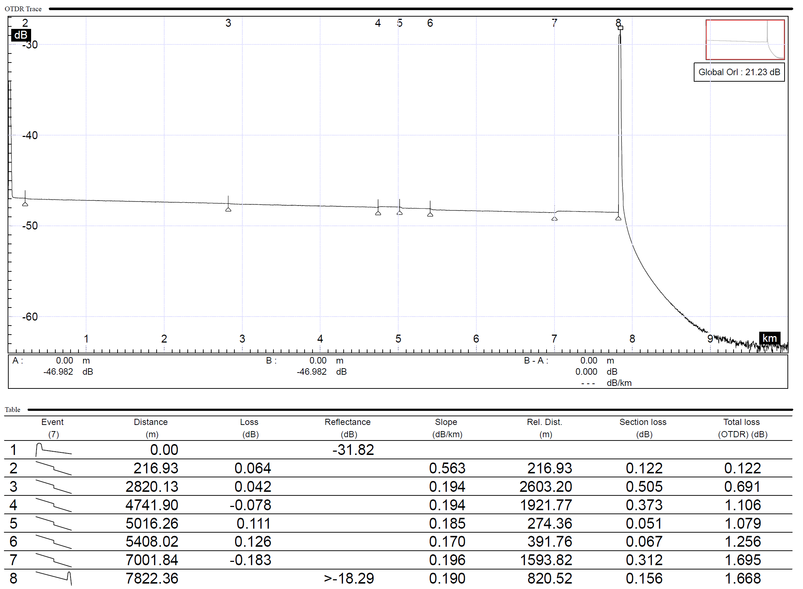

Example OTDR Trace (Click to Enlarge)

Image 'otdr_example.png' not found. Upload it to the repo to display here.
Reading an OTDR Trace: A Step-by-Step Guide
Which Wavelength Report to Use?
▪ Single-Mode (OS2): Always use the 1550nm report as your reference. It is more sensitive to bends and losses, giving you the most accurate splice count for your budget.
▪ Multi-Mode (OMx): Use the 850nm report. This is the primary transmission wavelength and its higher natural loss provides a 'worst-case' scenario for a safe, conservative budget.
Key Features to Identify (using an OS2 1550nm report as an example):
1. Fusion Splices (e.g., Event 3 at 2820.13m)
A small, sharp drop with no reflection. A loss of <0.1 dB (like 0.042 dB) is a high-quality splice.
2. End of Fiber (e.g., Event 8 at 7822.36m)
The final event is a large reflective spike, marking the end of the line.
×
Standards & References
This calculator uses parameters from major industry standards.
Official Standards
▪ ITU-T G.652: Defines attenuation (dB/km) for single-mode fiber.
View Standard
▪ TIA-568 Series: Sets max loss for connectors (0.75 dB) and splices (0.3 dB).
View Standards Project
▪ ISO/IEC 11801: The international equivalent of TIA-568.
View Standard
Additional Learning Resources
▪ Understanding Fiber Loss Calculation
Read on FS.com
▪ Single-Mode vs. Multi-Mode Fiber Types
Read on FS.com